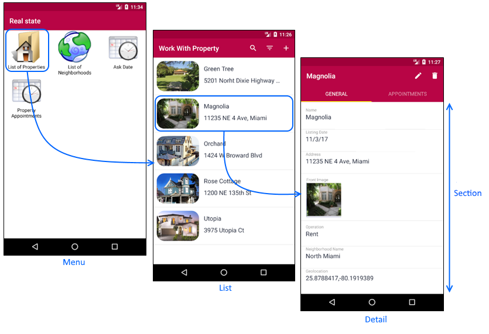

Work With for Smart Devices object
The Work With for Smart Devices (WWSD) object is an instance of the Work With for Smart Devices Pattern. You can apply the Work With for Smart Devices Pattern to a Transaction object in order to quickly and automatically obtain a mobile app like the one described below. In user interfaces, you frequently find a view that shows a list of items and when one of them is selected, that item's detail is displayed. Sometimes this pattern is called Master-Detail. When you have a list of items and you want to perform an action on them, in GeneXus it is called Work With for Smart Devices Pattern. The Work With Pattern has two elements: List and Detail.  ListIt is the list on which you will be working. Conceptually, what is associated with a list is a Panel object that contains a grid with the data. Over this panel, you have a default Action, which basically indicates that when an item is selected, its Detail has to be displayed. Since conceptually it is just a panel, in the list you have the same elements of a panel: actions, conditions, layouts by platform, etc.
It is possible to apply filters, orders, and searches to lists. There are also several ways to show data and it is even possible to act upon the list. DetailIt is the panel in which the selected item details will be displayed. Since it is a panel, it also has the same elements as the Panel object. For example, when looking at the list of properties, selecting one gives access to:
When displaying a set of data and its relations, there's always the problem of how to show this data in an ordered manner that can be understood by the end user. For this reason, the Work With Pattern provides the concept of Section within a Detail. SectionsA Section is just a group that allows you to separate certain operations of the user interface within the detail. Once again, panels are the basic elements that allow you to manipulate a section. That is to say, on a certain section you have data, actions, layouts, etc. When using a Section, you must have a way to organize them within a Detail. To do so, in the Detail layout you can make reference to one or more sections. Given that the Detail allows multiple layouts per platform, it may happen that some sections are displayed on one platform but not on another. NoteUntil GeneXus 16, in addition to applying the Work With for Smart Devices pattern to a Transaction object, you can also create a Work With for Smart Devices object through the New object dialog (in this case, it is not associated with any Transaction object, and you have to design it entirely from scratch). This is no longer offered in GeneXus 17.
Videos
|